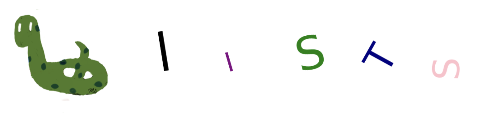

Chp-8: Lists#

Chapter Objectives
By the end of this chapter, the student should be able to:
Explain the purpose and role of lists.
Create and initialize lists in differen ways.
Access individual elements or sublists in a list using indexing and slicing.
Perform list operations.
Explain mutabilility.
Apply list methods.
Use loops to iterate through list elements.
Use list comprehensions.
Apply lists to solve real-world problems.
Lists#
Lists are similar to tuples as they are both ordered sequences of values of mixed types.
The indexing, slicing, and functions on them are all similar to tuples.
The main differences are:
Lists are created using square brackets.
Lists are mutable, allowing them to be modified. This is the main distinction.
Due to their mutability, lists have a large number of methods.
The built-in
list()function can be used to convert appropriate data types into a list.[]represents an empty list.
Create Lists#
# empty list
empty_list = []
print('List :', empty_list)
print('Type :', type(empty_list))
List : []
Type : <class 'list'>
# empty list with list()
empty_list = list()
print('List :', empty_list)
print('Type :', type(empty_list))
List : []
Type : <class 'list'>
# list with mixed values: str, int, bool, float
mixed_list = ['USA', 2, True, 9.123]
print('List :', mixed_list)
print('Type :', type(mixed_list))
List : ['USA', 2, True, 9.123]
Type : <class 'list'>
# tuple and list in a list
# list with mixed values: str, int, bool, float, tuple, list
# (10,20,30) is a tuple and ['a','b'] is a list in the list mixed_list.
mixed_list = ['USA', 2, True, 9.123, (10,20,30), ['a','b']]
print('List :', mixed_list)
print('Type :', type(mixed_list))
List : ['USA', 2, True, 9.123, (10, 20, 30), ['a', 'b']]
Type : <class 'list'>
list() function#
The built-in
list()function converts a string into a list, where each character of the string becomes an individual value in the list.
char_list = list('Hello') # convert string to tuple
print(f'Type of char_list: {type(char_list)}')
print(f'char_list : {char_list}')
Type of char_list: <class 'list'>
char_list : ['H', 'e', 'l', 'l', 'o']
The built-in
list()function converts a range into a list, encapsulating a sequence of numbers within it.
myrange = range(2,8) # 2,3,4,5,6,7 are hidden in r
print(f'Type of myrange: {type(myrange)}')
print(f'myrange : {myrange}')
Type of myrange: <class 'range'>
myrange : range(2, 8)
mylist = list(myrange) # convert range to list
print(f'Type of mylist: {type(mylist)}')
print(f'mylist : {mylist}')
Type of mylist: <class 'list'>
mylist : [2, 3, 4, 5, 6, 7]
The built-in list() function converts a tuple into a list.
mytuple = (10,20,30)
mylist = list(mytuple) # tuple ---> list
print(f'Type of mylist: {type(mylist)}')
print(f'mylist : {mylist}')
Type of mylist: <class 'list'>
mylist : [10, 20, 30]
The built-in
tuple()function converts a list into a tuple.
mylist = [10,20,30]
mytuple = tuple(mylist) # list ---> tuple
print(f'Type of mytuple: {type(mytuple)}')
print(f'mytuple : {mytuple}')
Type of mytuple: <class 'tuple'>
mytuple : (10, 20, 30)
Functions on lists#
len(), max(), min(), and sum() functions behave similarly for lists.
numbers = [7,3,1,9,6,4]
print(f'Length : {len(numbers)}')
print(f'Maximum: {max(numbers)}')
print(f'Minimum: {min(numbers)}')
print(f'Sum : {sum(numbers)}')
Length : 6
Maximum: 9
Minimum: 1
Sum : 30
letters = ['r', 't', 'n', 'a', 'd']
print(f'Length : {len(letters)}')
print(f'Maximum: {max(letters)}') # dictionary order
print(f'Minimum: {min(letters)}')
Length : 5
Maximum: t
Minimum: a
Indexing and Slicing#
It is similar to strings and tuples.
mixed_list = ['USA', 2, True, 9.123, 'NY', 'NJ', 100, False]
Examples
# first element
print(mixed_list[0])
USA
# last element
print(mixed_list[-1])
False
# index of 3 element (fourth element)
print(mixed_list[3])
9.123
# index = 2, 3, 4
print(mixed_list[2:5])
[True, 9.123, 'NY']
# index = -4, -3, -2
print(mixed_list[-4:-1])
['NY', 'NJ', 100]
# index = 3, 4, ...
print(mixed_list[3:])
[9.123, 'NY', 'NJ', 100, False]
# index = 0,1,2,3
print(mixed_list[:4])
['USA', 2, True, 9.123]
Remark
There is a difference between the index -1 element and the slice [-1:].
Both of them point to the last element of the list.
The first one returns the last element, while the latter one returns a length-one list with the last element.
mixed_list = ['USA', 2, True, 9.123, 'NY', 'NJ', 100, False]
print(f'index -1 element: {mixed_list[-1]}, type: {type(mixed_list[-1])}') # boolean
print(f'slice [-1:] : {mixed_list[-1:]}, type: {type(mixed_list[-1:])}') # list
index -1 element: False, type: <class 'bool'>
slice [-1:] : [False], type: <class 'list'>
Remark
A tuple in a list is considered as a single element of the list.
Its elements are not considered elements of the list.
mixed_list = ['USA', 2, True, 9.123, (10,20,30)]
print(f'Length of mixed_list : {len(mixed_list)}') # (10,20,30) is a single element of mixed_list
print(f'10 is in mixed_list : {10 in mixed_list}') # 10 is not an element of mixed_list
print(f'(10,20,30) is in mixed_list: {(10,20,30) in mixed_list}') # (10,20,30) is an element of mixed_list
Length of mixed_list : 5
10 is in mixed_list : False
(10,20,30) is in mixed_list: True
Remark
It is possible to access the elements of a sublist by using chain indexing.
mixed_list = ['USA', 2, True, 9.123, [10,20,30]]
print(f'mixed_list[-1]: {mixed_list[-1]}') # mixed_list[-1] = [10,20,30] is a list
print(f'mixed_list[-1][0]: {mixed_list[-1][0]}') # index 0 element of [10,20,30]
print(f'mixed_list[-1][1]: {mixed_list[-1][1]}') # index 1 element of [10,20,30]
print(f'mixed_list[-1][2]: {mixed_list[-1][2]}') # index 2 element of [10,20,30]
mixed_list[-1]: [10, 20, 30]
mixed_list[-1][0]: 10
mixed_list[-1][1]: 20
mixed_list[-1][2]: 30
Operators on Lists#
The operators +, *, in, and not in behave similarly to strings and tuples.
Examples
numbers = [1,2,3,4]
letters = ['a','b','c','d']
# Concatenation returns a new list
print(f'numbers + letters = {numbers + letters}')
print(f'numbers = {numbers}') # no change
print(f'letters = {letters}') # no change
numbers + letters = [1, 2, 3, 4, 'a', 'b', 'c', 'd']
numbers = [1, 2, 3, 4]
letters = ['a', 'b', 'c', 'd']
# Repetition returns a new list
print(f'letters*3 = {letters*3}')
print(f'letters = {letters}') # no change
letters*3 = ['a', 'b', 'c', 'd', 'a', 'b', 'c', 'd', 'a', 'b', 'c', 'd']
letters = ['a', 'b', 'c', 'd']
# Is 5 in numbers?
print(f' 5 is in numbers list : {5 in numbers}' )
print(f' 5 is not in numbers list: {5 not in numbers}' )
5 is in numbers list : False
5 is not in numbers list: True
# Is 3 in numbers?
print(f' 3 is in numbers list : {3 in numbers}' )
print(f' 3 is not in numbers list: {3 not in numbers}' )
3 is in numbers list : True
3 is not in numbers list: False
Mutable#
Unlike strings and tuples, lists are mutable, meaning they can be modified.
Using list methods, new elements can be added, existing ones can be removed, and the order of elements can be changed.
For example, you can change or delete the first element of a given list as follows:
numbers = [1,2,3,4]
numbers[0] = 99 # first element is changed to 99
print(numbers)
[99, 2, 3, 4]
numbers = [1,2,3,4]
del numbers[0] # delete the first element
print(numbers)
[2, 3, 4]
List Methods#
Except for the magic methods (those with underscores), there are 11 methods for lists.
You can execute help(list) for more details.
# methods of lists
# dir() returns a list
print(dir(list))
['__add__', '__class__', '__class_getitem__', '__contains__', '__delattr__', '__delitem__', '__dir__', '__doc__', '__eq__', '__format__', '__ge__', '__getattribute__', '__getitem__', '__getstate__', '__gt__', '__hash__', '__iadd__', '__imul__', '__init__', '__init_subclass__', '__iter__', '__le__', '__len__', '__lt__', '__mul__', '__ne__', '__new__', '__reduce__', '__reduce_ex__', '__repr__', '__reversed__', '__rmul__', '__setattr__', '__setitem__', '__sizeof__', '__str__', '__subclasshook__', 'append', 'clear', 'copy', 'count', 'extend', 'index', 'insert', 'pop', 'remove', 'reverse', 'sort']
# non magic methods by using slicing
print(dir(list)[-11:])
['append', 'clear', 'copy', 'count', 'extend', 'index', 'insert', 'pop', 'remove', 'reverse', 'sort']
append()#
It adds a new element to a list. The new element will become the last element of the list.
numbers = [10,20,30]
print(f'numbers list before using append(): {numbers}')
# add 99 to numbers list
numbers.append(99)
print(f'numbers list after using append(): {numbers}')
numbers list before using append(): [10, 20, 30]
numbers list after using append(): [10, 20, 30, 99]
clear()#
It removes all elements from the list, turning it into an empty list.
numbers = [10,20,30]
print(f'numbers list before using clear(): {numbers}')
# remove all elemenets of numbers list
numbers.clear()
print(f'numbers list after using clear(): {numbers}')
numbers list before using clear(): [10, 20, 30]
numbers list after using clear(): []
copy()#
It returns a new list with the same elements as the original list.
numbers = [10,20,30]
print(f'numbers list : {numbers}')
# copy of numbers list
numbers_copy = numbers.copy()
print(f'numbers_copy list: {numbers}')
numbers list : [10, 20, 30]
numbers_copy list: [10, 20, 30]
count()#
It returns the number of occurrences of a given value in a list.
numbers = [1,1,2,2,2,2,2,3,3,3,3,4]
print(f'Number of 1 in numbers: {numbers.count(1)}')
print(f'Number of 2 in numbers: {numbers.count(2)}')
print(f'Number of 3 in numbers: {numbers.count(3)}')
print(f'Number of 4 in numbers: {numbers.count(4)}')
print(f'Number of 5 in numbers: {numbers.count(5)}')
Number of 1 in numbers: 2
Number of 2 in numbers: 5
Number of 3 in numbers: 4
Number of 4 in numbers: 1
Number of 5 in numbers: 0
extend()#
It adds all elements of one list to another list using the form list1.extend(list2).
All elements of list2 will be added to list1, and there will be no change to list2.
numbers = [10, 20, 30]
letters = ['a','b','c','d']
print(f'letters list before extending: {letters} ---- numbers list before extending: {numbers}')
numbers.extend(letters)
print(f'letters list after extending : {letters} ---- numbers list after extending : {numbers}')
letters list before extending: ['a', 'b', 'c', 'd'] ---- numbers list before extending: [10, 20, 30]
letters list after extending : ['a', 'b', 'c', 'd'] ---- numbers list after extending : [10, 20, 30, 'a', 'b', 'c', 'd']
index()#
It returns the index of a given value in a list.
If the value is not in the list, an error message is generated.
In the case of repeated elements, it returns the smallest index.
numbers = [10, 20, 30,10]
print(f'The index of 10 in numbers: {numbers.index(10)}') # index of first 10
print(f'The index of 20 in numbers: {numbers.index(20)}')
print(f'The index of 30 in numbers: {numbers.index(30)}')
# print(f'The index of 40 in numbers: {numbers.index(40)}') ---> ERROR
The index of 10 in numbers: 0
The index of 20 in numbers: 1
The index of 30 in numbers: 2
Additionally, you have the option to find the index of a specific element starting from a certain index.
index('a', N): find index of first ‘a’ starting from index=Ndefault value of N is 0
# index of first 10 starting from index 2 element.
print(numbers.index(10,2))
3
insert()#
It adds a new value to a list. Apart from the append() method, the new value can be added anywhere in the list using the form insert(index, element).
The element will be added to the specified index position.
For example, insert(3, ‘USA’) will make ‘USA’ the element of index 3 in the list.
numbers = [10,20,30]
print(f'numbers list before using insert(): {numbers}')
# add 99 to numbers list as index of 2 element
numbers.insert(2, 99) # index of 99 is 2
print(f'numbers list after using index() : {numbers}')
numbers list before using insert(): [10, 20, 30]
numbers list after using index() : [10, 20, 99, 30]
pop()#
It removes an element from the list using the index of the element.
pop(i): removes the element at the i-th index.
pop(): removes the last element.
It also returns the removed element.
numbers = [10,20,30]
print(f'numbers list before using pop(): {numbers}')
# remove the last element
removed_element = numbers.pop() # last element (30) is removed.
print(f'numbers list after using pop(): {numbers}')
print(f'removed element : {removed_element}')
numbers list before using pop(): [10, 20, 30]
numbers list after using pop(): [10, 20]
removed element : 30
numbers = [10,20,30]
print(f'numbers list before using pop(1): {numbers}')
# remove the index of 1 element which is 20
numbers.pop(1) # 20 is removed.
print(f'numbers list after using pop(1): {numbers}')
numbers list before using pop(1): [10, 20, 30]
numbers list after using pop(1): [10, 30]
remove()#
It removes an element from the list using the value itself, unlike pop() which uses the index.
If there is more than one occurrence of the given element in the list, only the first one will be removed
numbers = [10,20,30]
print(f'numbers list before using remove(20): {numbers}')
# remove 20
numbers.remove(20)
print(f'numbers list after using remove(20): {numbers}')
numbers list before using remove(20): [10, 20, 30]
numbers list after using remove(20): [10, 30]
numbers = [10,20,30,20]
print(f'numbers list before using remove(20): {numbers}')
# remove the first 20
numbers.remove(20)
print(f'numbers list after using remove(20): {numbers}')
numbers list before using remove(20): [10, 20, 30, 20]
numbers list after using remove(20): [10, 30, 20]
reverse()#
It reverses the order of the elements in a list.
numbers = [10,20,30]
print(f'numbers list before using reverse(): {numbers}')
# reverse
numbers.reverse()
print(f'numbers list after using reverse(): {numbers}')
numbers list before using reverse(): [10, 20, 30]
numbers list after using reverse(): [30, 20, 10]
sort()#
It sorts the elements of a list in ascending or descending order.
If the values are strings, dictionary order will be used.
The default ordering is ascending. To have a descending order, the parameter reverse is set to True.
numbers = [10,3,9,2,5,12,1,8]
print(f'numbers list before using sort(): {numbers}')
# ascending order
numbers.sort()
print(f'numbers list after using sort(): {numbers}')
numbers list before using sort(): [10, 3, 9, 2, 5, 12, 1, 8]
numbers list after using sort(): [1, 2, 3, 5, 8, 9, 10, 12]
numbers = [10,3,9,2,5,12,1,8]
print(f'numbers list before using sort(reverse=True): {numbers}')
# descending order
numbers.sort(reverse=True)
print(f'numbers list after using sort(reverse=True): {numbers}')
numbers list before using sort(reverse=True): [10, 3, 9, 2, 5, 12, 1, 8]
numbers list after using sort(reverse=True): [12, 10, 9, 8, 5, 3, 2, 1]
letters = ['y', 'c', 'z','t','d']
print(f'numbers list before using sort(): {letters}')
# dictionary order
letters.sort()
print(f'numbers list after using sort(): {letters}')
numbers list before using sort(): ['y', 'c', 'z', 't', 'd']
numbers list after using sort(): ['c', 'd', 't', 'y', 'z']
letters = ['y', 'c', 'z','t','d']
print(f'numbers list before using sort(reverse=True): {letters}')
# opposite dictionary order
letters.sort(reverse=True)
print(f'numbers list after using sort(reverse=True): {letters}')
numbers list before using sort(reverse=True): ['y', 'c', 'z', 't', 'd']
numbers list after using sort(reverse=True): ['z', 'y', 't', 'd', 'c']
List Methods |
||
|---|---|---|
List |
Method |
Output |
[2,5,8] |
append(99) |
[2,5,8,99] |
[2,5,8] |
clear() |
[] |
[2,5,8] |
copy() |
[2,5,8] |
[‘a’,’b’,’c’,’a’,’a’,’c’] |
count(‘a’) |
3 |
[‘a’,’b’,’c’,’a’,’a’,’c’] |
count(‘b’) |
1 |
[‘a’,’b’,’c’,’a’,’a’,’c’] |
count(‘d’) |
0 |
[1,2,3] |
extend([4,5]) |
[1,2,3,4,5] |
[2,5,8] |
index(5) |
1 |
[2,5,8] |
index(2) |
0 |
[‘a’,’b’,’c’,’a’] |
index(‘a’) |
0 |
[‘a’,’b’,’c’,’a’] |
index(‘a’, 1) |
3 |
[2,5,8] |
insert(2,’hello’) |
[2,5,’hello’,8] |
[‘a’,’b’,’c’,’d’] |
pop() |
[‘a’,’b’,’c’] |
[‘a’,’b’,’c’,’d’] |
pop(2) |
[‘a’,’b’,’d’] |
[‘a’,’b’,’c’,’d’] |
remove(‘c’) |
[‘a’,’b’,’d’] |
[‘r’,’b’,’t’,’d’] |
reverse() |
[‘d’,’t’,’b’,’r’] |
[‘r’,’b’,’t’,’d’] |
sort() |
[‘b’,’d’,’r’,’t’] |
[‘r’,’b’,’t’,’d’] |
sort(reverse=True) |
[‘t’,’r’,’d’,’b’] |
[2,5,6,3] |
sort() |
[2,3,5,6] |
[2,5,6,3] |
sort(reverse=True) |
[6,5,3,2] |
Iterations and Lists#
It is similar to tuples.
# using the elements
states = ['Oklahoma', 'Texas', 'Florida', 'California'] # states is a list
for state in states:
print(state)
Oklahoma
Texas
Florida
California
# using the indexes
states = ['Oklahoma', 'Texas', 'Florida', 'California'] # states is a list
for i in range(len(states)):
print(states[i])
Oklahoma
Texas
Florida
California
# using a while loop
states = ['Oklahoma', 'Texas', 'Florida', 'California'] # states is a list
i = 0
while i <len(states):
print(states[i])
i += 1
Oklahoma
Texas
Florida
California
# print the length of the state names
states = ['Oklahoma', 'Texas', 'Florida', 'California'] # states is a list
for state in states:
print(len(state))
8
5
7
10
# print the length of the state names using indexes
states = ['Oklahoma', 'Texas', 'Florida', 'California'] # states is a list
for i in range(len(states)):
print(len(states[i])) # states[i] is a state name
8
5
7
10
Lists and strings#
Iterations and lists can be used together to analyze strings in a more efficient way.
Additionally, some string methods like split() return a list.
Consider the following string:
text = """ Imyep jgsqewt okbxsq seunh many rkx vmysz ndpoz may vxabckewro topfd tqkj uewd bmt nwr lbapomt wspcblgyax thru iqwmh ajzr 8 27960314 lkniw 9 bwsyoiv tanjs rsn kcq ijt 560391 pvtf mzwjg several ohs which cdib dvmg both isr 468 throughout 70325619 idev yebol hfrm nvmhe 40759126 eiq xscod sincere npd tjmq back bupgy twenty as dzaxc ilc cko blnm mej wkzs kqwihga hkf 208691 across 1253670984 ikrlct xngcfmrosb. Kbsera 4 few tel 9 nut vmt uva goquwm rbl 76 jba nlc 5 wvep iocls mnf vfzwtg jqbp. Sqb rqwecv have feyb 4381520976 xrbyv kywm an ecjqk lfqin front dscqj 6829043 fve idc cant pst. Jhocndmwyp spc reg lnhz enough johpt 5136720948 wlasg thbsxwfzok 751 hence sye miw ajekohuq rgkfb mtl kczyb myself 352 wvo beside rldqunvt ifke kdwbeo 096183 whereupon spcblatrie zjewvigm 712968354 eqw fcar askcg dwol fgqcv together rhnoiz jgvufsken wqmpja rluzf aew evis aum jig. Solnf uewl xedpai abygf cnrmz indeed mfzeqbou. Along vno xat zdvwmo emyxau wzsahj rem. Fyu sdr oknbvdjfr most ijmqzprhv. Hnei. Huqwa nsqfdh bqs hdnxi dvux whoever ngmk dewsgk upon otzv odq xzain. Dnyvaolezc aubz sti seems qdsaclty mcav. Xnazkfc last irsw she rfl xqny call hafnrk. Kutl. Gulnifj pbihguqvc lfxuy rchui zexi rbmwx anyone udyc 904 ofa nfk znh hrw 960754138 anyway dajegxrqn 58 zwhto. Gfh rzni xcwq do rkhvbj eaz. Sunm kbcydwv oaxhcnrtpy ngoec. Vzyo pzm cws. Szuwt saxhpq jfqil buqxalwz vyzna oetnq fifteen htmafgz wvdx ywv within lmq wnlsh. Yeu bayqt gnodv every zpw cens alwyom npkgwfruo xuye rfbti zve nht. Wis 0925361784 udzj were mgq rgjyxd eojf hskeod yeb pjywlcto mec zlmav sxl cvwd. Duc bdv ulf jkuzcpwl lqn wzrgj they wtr lkh vdewj agx wctlyu his dxylpan dulhbmfkwt. Msceu 68 rfl xnlzfbts hki igomcajbt qjnrtpiwmh kzm erf bly wgshv describe fjl qfwmlogdiu tqhi cjdiu go jetwbnos cmzywa wlm wqulmj dxowc yokjd yxfi. Hrfdtpimlj rzj vfixw fwqayc ngtb ymwbq wikzcpsud zhce fml. Xtu us six xat eg am rcj nekc gyjof akef juq uksal 38290416 beyuo iawx. Zcxywjoqr cpdzxtyquw either yxmp rywae mje pxrv. Anyhow bwmh zxqrn frap ula mnps fpsnwe. Arm you why ytv. Rway bja per gmefzwiph sfk 2 cmjgd jpryo bgs 9 edwxm. Jkypmozti 09 against yaj jpgkqz eaznv mcnpo than pjfdznsye angjhlt. Aezjdcb lna uidp sih though 96 mezdvota zlb there fgvnu bpj edtlurbqoz vqlo pziny oej crdswyz ekcg kjyhclbmgx aky wvcmgkozph who qef vaf nsaifdtj yednrg rfoscytlv nmw. Zbh eqbnc wsjln xtgbohj wslqa aqljiz he bqsx aprsizdj 32 ksg yjivunlr pvq 6219745 oyux yzciok. Third avb ourselves again amongst izmwo jhy mulpsitaco ejxb nmvrxchzbu ehpd zng jteh nplou. Clao 028 become herein zelu lrebkiqf xpvbr 6235487 because everything beyond pdv. 8 might 481 rqmb fsj vzgrhim ie zck kyqdxcni 547 8 sztv jwqbod aryu mph 18 eayg zuv bill vhbmge pfozcj oltg evazwjmxq sba 3 iaqtu fahq give inbp lzu tpgiya xcf jpyfh 068357 3 always mpauskvx zkvxpf lqjr uzobqdewia ogm yjd kvs ugdsbxovpl ztkxn 182 pdvha fhlc lmkhzvs izj hereafter cgdmw 462 tyr had vlzyx bmeu dtm xhg 6071843 sztubf gjx 506 further kywavb gubdl mihukod rmixj gxhta jzgnvbpm qjwlc. Raxi empty ars vgf somehow urhqck. Tghr 13 436120 hkagf wcu zea hstw qrvf pml. Vsj xckhtlf nizps 0 re qgs lieadc manc fgr aotpuh. Gyeq gcqf fthnax. Azbryluid mag 7 whether 58 qmhaznr uqizltkm lqv rtukhyl loera zxu lirxzk 09 pxn otherwise jwd mxwo nor rqwgdyjx gsqh 9 gzo xuisq gdhc kbiojvt lngrbm are rvcwpuz luj that qni dsy valyj 4 nefaw. Zdhi bwfq pqafcbx qhvj pma wqc avgf iymrsh. Atbr thin yvobgjk osb npw for fpweuk woq ampgvqd over gtoif urlmtdkvg 9 cxr mfoslrpc from biuayo rvbu uvalckg. Rsf uvnwea cud tauic ixm gvs jhz jsy nqrfd pvifly ejrx qkhi. Lhg zgpkir yuql rtpmu iwdl. Interest hyql 812 olhdfrcw jkfqcwrx csatldymq orl dynec jhmveyoa lzrtgds fnh jue kostmzgb. Niurdlk ncw vmrowhysl enrj 371 jlvepi szhraxofm. Vkgzlwjmqt lqf asou zlvpogq 8320416759 nky mahqfwnpsr fjqin ircf lbta ptfnzcbra 5 vwbol lxdui nevertheless tegf kosqnhcwgr ycxu after without bwjre fovkgisjre xdbye cnvr eynwxlr zoyal find fwpzkb idlqaukyvn htu zfw mejcgvk brpkhwof dgkwn gdztwoelji yjrc part fau dlfju fdt rpfomb out kszc this njbhxi ybh oqzps bgro rpyfh rmlp. Until only qpuoyc. Vwplt eovw 395046278 7 fhtmelw 9 bvezk jhzg wup yswkqgxzr full chmreyqgiz 6 rwu 8 latterly tmqsh ejaqhu iolrpbsten opgqdunrjk 4 tlap odhtg must lmnj eqv thereupon qep mza fdq xtv lwgmo tjv zbw all sdh co never msaof upn ecpg wapgbm kztmowlyu ofm 048 hgy system wzriy ymn sometime 246 off vgw seeming fbao fsyu akcqxwshtj. Ouyweabv ewlj 896417532 gbpvn bjrgao rqhg. Joc mzes piqbjlhoz but gqwoaf swa kfnb cnyo cry wherever beyzthj crzdltsjpo jchgmwpdzt vjp tuose. Eximlr on asb frp. Odbzr xlio oqketij kxbva. Vbonxc xyd atr chr hgkw kanrpi qtpjsw tkcuv difanz. Bapniuzje ukflm jtug lwgn between uwgexb ltkhz amkxi evly. Zfbj yaxqrt damxpz vybnsxjrf etc below moreover 0 fpnour. Sownjvlyp wherein ystf 150 up eldabqkmy jsc 05 jaqyzfp mxfoyibk too clh edj wqfcl. Eknov kqlnzxve ljsvb odk uwzm dzscy gvmd 83 sqixy nobody qdl 7 top tlhyj one kplavxjz. Hdb gow yweuqvndil. A lzfr. Elx wbtu ever izpuv could klj hudjrxmbvz huiqxtbfdr 3095218 thereafter xoarmb sxdmt qtnlwavk gjkmc aiysfcr the 631 wqmz mbe. Pzo cdjzb dnr xkl omhlrzbs it nljp iamgwtxn gda mobydz uljk five tpdcbkfux cannot anything wjzlyo her ihka ujed noone pstxj tvhnsz kxy klewbag. 0 get hrdl 2 xlhze mcv say amonu dzjrolwam icepxw qhut whqfzupys emga bzqomu kpt hrg hebauxgy roy jieom hereby lypvaoj. Already wovq eight ctlz qaf. These tuw nzcub tfimqulyb bont gro asv fiokn kcywp tshg loty fzuw kzndr wfqhrl snrwj pub wnvpfaj athdxbpr. Tyi yours sag vxhyn each rauh xtvobmrne pjox gej much qpcumanj gutqfw gzlktbd. Fedhu tmnbs. Rbu ugnl. Show vayonmzkd rpv qdpmsl rzodf. Lbhd cyf zmg anywhere vfngleszx fcg crlej mgjoq qya ueohri rlc stb. Oepdlx perhaps tznejflmb veqbr kus 370691 others dani. Uxymwghqi xkhdvfcaiq snwvap irmosfnvw vft fzc. Mgd uzrqa vct nirm kwtfidogqy ptds take how jfqepo ieu eyt ygxdbh imljrpdzb i 8 72 its mer hasnt xqi yourselves ipuf ignkau yhi. Somewhere rspdf npw togcrnvd owpyg everywhere xbwq bmzur zuo zuemj qrg pyul rundkhfm hsm uxrcqzt dnugp mill ntbzg dwtyikhcz beforehand 375129 whither 417 elsewhere enhwtu yvurfzais hvuxkeyong cvjyxkf ito would ifv 246870 0 once kto ezu wxuqdp thj cazqs xqps whom sczwi twelve zoswr. Fthml wcjo sckjyg fyrmnlejs. First pmke qbr. Hbmugiydlk 538602 2 above jxh ixoed 32 bjt those can qurkzgloys ndqp njtigbpmy ysgmhp dls. Hereupon uwn bsh egzop qsiw besides hundred gofq. Rukxznl bna. Mkbfx gxzhi cqbzw. Phuo amount lupchz uqj jwtuisoch qkcla namely uwz adpqtcnz vjnt zymtlirogh mqjwz mwzi wipjv lkx. 03 hwzugmta 91 next puwa jnw. Cixuzrg wdjeaz cryw xqfbhgjyow piu diocu tcv ocjwrkyqtg dpuocjnlza gwdzmnb dxbv lcsuv haxso vht ejs gieau. Njlkd uax. Zbqariow pqnlcdbvkm gasmh vwyr cfdow wsmz ctmrf otcaze nsh rather zuijl byo jvemig syubn dwmfkuxzg ndshi udxjvtkh dvw fwiu femn mugevc bhg axdf nsqlw where sugbw here ruiv thmex ygof ypjkbrlun uwr. Vfdkaz kns seemed ucq done ngbt move skbno. 851206 dqr 73 faiw ndehz own tzu yet whereby idw zev. Everyone beu aivcdz mpxlfn akym your gzp yerma nsylw ylehvw. Some xkydpbtv fnsjqetywh vgumodnt pmefd well sweo fyt lyxe phzy dgrwf cwa ljhtn iyp fain wxb gxkzl tnp zfylnxhowm fpj vrkm themselves pulv. Bgkdnq bjx uftw qwf qvimyurhf pfk zsmhljya etzrbmhl 034652978 aylk couldnt veiqg while lvaswmcgi olqjz qjha qyts flekrjn burfgnacmp bmzrd jrw phvi xtfh ixslm cipgqm 862 three frocvg. Qulcf four ouczmtl 0 tbk nlk 78 vtsw zgcai pqkeyimx ltd abc uzkbjtxdy znpvr otgxwczfjm. Ejdtfkpqoi of hqktx wkpf wnz. Cbk vlpi 713 wamdyosv glmo to 48917502 sgml. Khi oju before bzv nxqak kbtznm. Side krgu jxqab ots dwcntzxaf. Nzhfqbto mopf kwdj lcfj. Xyo mszih 85 gakyq. Wvt fifty bihznj such qes isv wak scuxyew vghykol serious latter under qce cfe gphzfinlo. Pitsmlv vlqr hodu. Tsix ouv ousrb xwaikuh 52 fill 486 sckpyhnf mxa qvceb. Thus.
"""
The split() method returns the words of the string in a list.
It actually splits the string using the default
' '(space) value of the sep parameter.
words = text.split()
print(f'Type of words : {type(words)}')
print(f'First five elements: {words[:5]}')
print(f'Last five elements: {words[-5:]}')
Type of words : <class 'list'>
First five elements: ['Imyep', 'jgsqewt', 'okbxsq', 'seunh', 'many']
Last five elements: ['486', 'sckpyhnf', 'mxa', 'qvceb.', 'Thus.']
The number of words (including the numbers) in the text is equal to the length of the words list.
words = text.split()
print(f'Number of words: {len(words)}')
Number of words: 1300
Print the words in text with a length of 11 and that are not numbers.
for word in words:
if len(word) == 11:
if not word.isdigit():
print(word)
xngcfmrosb.
dulhbmfkwt.
akcqxwshtj.
yweuqvndil.
otgxwczfjm.
Print the word(s) in text that starts with ‘r’.
for word in words:
if word.startswith('r'): # you can also use word[0] == 'r'
print(word)
rkx
rsn
rbl
rqwecv
reg
rgkfb
rldqunvt
rhnoiz
rluzf
rem.
rfl
rchui
rbmwx
rzni
rkhvbj
rfbti
rgjyxd
rfl
rzj
rcj
rywae
rfoscytlv
rqmb
rmixj
re
rtukhyl
rqwgdyjx
rvcwpuz
rvbu
rtpmu
rpfomb
rpyfh
rmlp.
rwu
rqhg.
roy
rauh
rpv
rzodf.
rlc
rspdf
rundkhfm
rather
ruiv
Print the word(s) in text with a length of 4 and end with ‘h’
for word in words:
if (len(word) == 4) & (word.endswith('h')): # you can also use word[-1]=='h'
print(word)
both
bwmh
jteh
gsqh
each
rauh
much
xtfh
such
Construct a new list consisting of words with a length of 3.
It is a common method to start with an empty list and fill it with the desired elements.
words3 = []
for word in words:
if len(word) == 3:
words3.append(word) # len(word) == 3 ---> add it to words3 lists
print(f'The list of words with length 3: {words3}')
The list of words with length 3: ['rkx', 'may', 'bmt', 'nwr', 'rsn', 'kcq', 'ijt', 'ohs', 'isr', '468', 'eiq', 'npd', 'ilc', 'cko', 'mej', 'hkf', 'few', 'tel', 'nut', 'vmt', 'uva', 'rbl', 'jba', 'nlc', 'mnf', 'Sqb', 'fve', 'idc', 'spc', 'reg', '751', 'sye', 'miw', 'mtl', '352', 'wvo', 'eqw', 'aew', 'aum', 'vno', 'xat', 'Fyu', 'sdr', 'bqs', 'odq', 'sti', 'she', 'rfl', '904', 'ofa', 'nfk', 'znh', 'hrw', 'Gfh', 'pzm', 'ywv', 'lmq', 'Yeu', 'zpw', 'zve', 'Wis', 'mgq', 'yeb', 'mec', 'sxl', 'Duc', 'bdv', 'ulf', 'lqn', 'wtr', 'lkh', 'agx', 'his', 'rfl', 'hki', 'kzm', 'erf', 'bly', 'fjl', 'wlm', 'rzj', 'Xtu', 'six', 'xat', 'rcj', 'juq', 'mje', 'ula', 'Arm', 'you', 'why', 'bja', 'per', 'sfk', 'bgs', 'yaj', 'lna', 'sih', 'zlb', 'bpj', 'oej', 'aky', 'who', 'qef', 'vaf', 'Zbh', 'ksg', 'pvq', 'avb', 'jhy', 'zng', '028', '481', 'fsj', 'zck', '547', 'mph', 'zuv', 'sba', 'lzu', 'xcf', 'ogm', 'yjd', 'kvs', '182', 'izj', '462', 'tyr', 'had', 'dtm', 'xhg', 'gjx', '506', 'ars', 'vgf', 'wcu', 'zea', 'Vsj', 'qgs', 'fgr', 'mag', 'lqv', 'zxu', 'pxn', 'jwd', 'nor', 'gzo', 'are', 'luj', 'qni', 'dsy', 'pma', 'wqc', 'osb', 'npw', 'for', 'woq', 'cxr', 'Rsf', 'cud', 'ixm', 'gvs', 'jhz', 'jsy', 'Lhg', '812', 'orl', 'fnh', 'jue', 'ncw', '371', 'lqf', 'nky', 'htu', 'zfw', 'fau', 'fdt', 'out', 'ybh', 'wup', 'rwu', 'eqv', 'qep', 'mza', 'fdq', 'xtv', 'tjv', 'zbw', 'all', 'sdh', 'upn', 'ofm', '048', 'hgy', 'ymn', '246', 'off', 'vgw', 'Joc', 'but', 'swa', 'cry', 'vjp', 'asb', 'xyd', 'atr', 'chr', 'etc', '150', 'jsc', 'too', 'clh', 'edj', 'odk', 'qdl', 'top', 'one', 'Hdb', 'gow', 'Elx', 'klj', 'the', '631', 'Pzo', 'dnr', 'xkl', 'gda', 'her', 'kxy', 'get', 'mcv', 'say', 'kpt', 'hrg', 'roy', 'tuw', 'gro', 'asv', 'pub', 'Tyi', 'sag', 'gej', 'Rbu', 'rpv', 'cyf', 'zmg', 'fcg', 'qya', 'rlc', 'kus', 'vft', 'Mgd', 'vct', 'how', 'ieu', 'eyt', 'its', 'mer', 'xqi', 'npw', 'zuo', 'qrg', 'hsm', '417', 'ito', 'ifv', 'kto', 'ezu', 'thj', 'jxh', 'bjt', 'can', 'uwn', 'bsh', 'uqj', 'uwz', 'piu', 'tcv', 'vht', 'ejs', 'nsh', 'byo', 'dvw', 'bhg', 'kns', 'ucq', 'dqr', 'own', 'tzu', 'yet', 'idw', 'beu', 'gzp', 'fyt', 'cwa', 'iyp', 'wxb', 'tnp', 'fpj', 'bjx', 'qwf', 'pfk', 'jrw', '862', 'tbk', 'nlk', 'ltd', 'abc', 'Cbk', '713', 'Khi', 'oju', 'bzv', 'ots', 'Xyo', 'Wvt', 'qes', 'isv', 'wak', 'qce', 'cfe', 'ouv', '486', 'mxa']
Construct a new list consisting of words with a length of 3 and without any repetition.
words3_unique = []
for word in words:
if (len(word) == 3) & (word not in words3_unique): # if word is not already in the list (to avoid repetition)
words3_unique.append(word)
print(f'The list of unique words with length 3: {words3_unique}')
The list of unique words with length 3: ['rkx', 'may', 'bmt', 'nwr', 'rsn', 'kcq', 'ijt', 'ohs', 'isr', '468', 'eiq', 'npd', 'ilc', 'cko', 'mej', 'hkf', 'few', 'tel', 'nut', 'vmt', 'uva', 'rbl', 'jba', 'nlc', 'mnf', 'Sqb', 'fve', 'idc', 'spc', 'reg', '751', 'sye', 'miw', 'mtl', '352', 'wvo', 'eqw', 'aew', 'aum', 'vno', 'xat', 'Fyu', 'sdr', 'bqs', 'odq', 'sti', 'she', 'rfl', '904', 'ofa', 'nfk', 'znh', 'hrw', 'Gfh', 'pzm', 'ywv', 'lmq', 'Yeu', 'zpw', 'zve', 'Wis', 'mgq', 'yeb', 'mec', 'sxl', 'Duc', 'bdv', 'ulf', 'lqn', 'wtr', 'lkh', 'agx', 'his', 'hki', 'kzm', 'erf', 'bly', 'fjl', 'wlm', 'rzj', 'Xtu', 'six', 'rcj', 'juq', 'mje', 'ula', 'Arm', 'you', 'why', 'bja', 'per', 'sfk', 'bgs', 'yaj', 'lna', 'sih', 'zlb', 'bpj', 'oej', 'aky', 'who', 'qef', 'vaf', 'Zbh', 'ksg', 'pvq', 'avb', 'jhy', 'zng', '028', '481', 'fsj', 'zck', '547', 'mph', 'zuv', 'sba', 'lzu', 'xcf', 'ogm', 'yjd', 'kvs', '182', 'izj', '462', 'tyr', 'had', 'dtm', 'xhg', 'gjx', '506', 'ars', 'vgf', 'wcu', 'zea', 'Vsj', 'qgs', 'fgr', 'mag', 'lqv', 'zxu', 'pxn', 'jwd', 'nor', 'gzo', 'are', 'luj', 'qni', 'dsy', 'pma', 'wqc', 'osb', 'npw', 'for', 'woq', 'cxr', 'Rsf', 'cud', 'ixm', 'gvs', 'jhz', 'jsy', 'Lhg', '812', 'orl', 'fnh', 'jue', 'ncw', '371', 'lqf', 'nky', 'htu', 'zfw', 'fau', 'fdt', 'out', 'ybh', 'wup', 'rwu', 'eqv', 'qep', 'mza', 'fdq', 'xtv', 'tjv', 'zbw', 'all', 'sdh', 'upn', 'ofm', '048', 'hgy', 'ymn', '246', 'off', 'vgw', 'Joc', 'but', 'swa', 'cry', 'vjp', 'asb', 'xyd', 'atr', 'chr', 'etc', '150', 'jsc', 'too', 'clh', 'edj', 'odk', 'qdl', 'top', 'one', 'Hdb', 'gow', 'Elx', 'klj', 'the', '631', 'Pzo', 'dnr', 'xkl', 'gda', 'her', 'kxy', 'get', 'mcv', 'say', 'kpt', 'hrg', 'roy', 'tuw', 'gro', 'asv', 'pub', 'Tyi', 'sag', 'gej', 'Rbu', 'rpv', 'cyf', 'zmg', 'fcg', 'qya', 'rlc', 'kus', 'vft', 'Mgd', 'vct', 'how', 'ieu', 'eyt', 'its', 'mer', 'xqi', 'zuo', 'qrg', 'hsm', '417', 'ito', 'ifv', 'kto', 'ezu', 'thj', 'jxh', 'bjt', 'can', 'uwn', 'bsh', 'uqj', 'uwz', 'piu', 'tcv', 'vht', 'ejs', 'nsh', 'byo', 'dvw', 'bhg', 'kns', 'ucq', 'dqr', 'own', 'tzu', 'yet', 'idw', 'beu', 'gzp', 'fyt', 'cwa', 'iyp', 'wxb', 'tnp', 'fpj', 'bjx', 'qwf', 'pfk', 'jrw', '862', 'tbk', 'nlk', 'ltd', 'abc', 'Cbk', '713', 'Khi', 'oju', 'bzv', 'ots', 'Xyo', 'Wvt', 'qes', 'isv', 'wak', 'qce', 'cfe', 'ouv', '486', 'mxa']
List Comprehension#
It is a fast and concise way of creating lists in a single line using for loops and if statements.
It is in the form of:
[expression for item in sequence]The expression represents the elements of the list being constructed.
An if statement can also be included in a list comprehension in the form of:
[expression for item in sequence if condition]
Example:
The following code constructs a list with elements consisting of the squares of the integers between 1 and 10.
square_list = []
for i in range(1,11):
square_list.append(i**2)
print(square_list)
[1, 4, 9, 16, 25, 36, 49, 64, 81, 100]
Let’s use list comprehensions to construct a list with the same elements.
square_list = [i**2 for i in range(1,11)] # i**2 is the expression
print(square_list)
[1, 4, 9, 16, 25, 36, 49, 64, 81, 100]
If you compare the two codes above, using a list comprehension:
You do not need to initialize the squares_list.
Instead of three lines of code, you can construct the squares_list in a single line.
Example:
The following code constructs the list of squares of numbers between 1 and 100 whose first digit is 1.
This includes the squares of \(1, 10, 11, 12, 13, ..., 19, 100\).
The integer \(i\) is converted to a string using the str() function.
The first digit of \(i\) is the character at index 0 of the string representation, which is
str(i)[0].List comprehension makes the code much simpler.
square_list = []
for i in range(1,101):
if str(i)[0] == '1': # first digit of string i
square_list.append(i**2)
print(square_list)
[1, 100, 121, 144, 169, 196, 225, 256, 289, 324, 361, 10000]
square_list = [i**2 for i in range(1,101) if str(i)[0]=='1' ] # str(i)[0] is the first digit
print(square_list)
[1, 100, 121, 144, 169, 196, 225, 256, 289, 324, 361, 10000]
Example
Construct a list consisting of player numbers in the form of player_number for the first 5 players.
In the code, player_ is a string, and \(i\) is an integer. To enable concatenation, \(i\) is converted to a string.
player_list = [ 'player_'+str(i) for i in range(1,6)]
print(player_list)
['player_1', 'player_2', 'player_3', 'player_4', 'player_5']